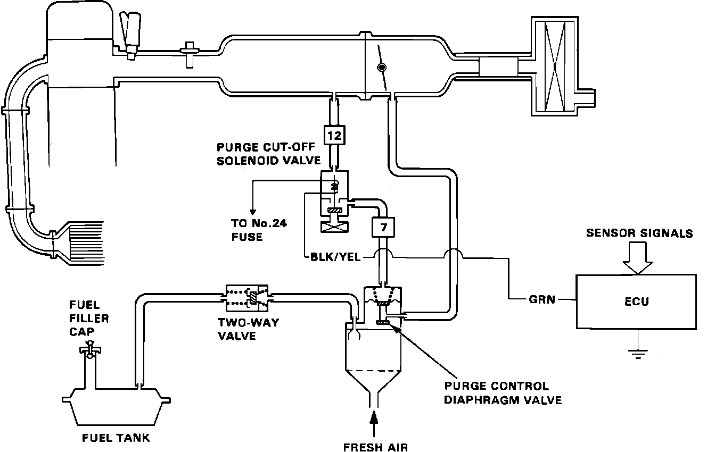

Canister Purge Solenoid: Description and Operation
Purge Cut-Off System Operation:

PURPOSE
The solenoid is used by the ECU to control the evaporative emission system.
LOCATION
Mounted back edge of intake manifold.
OPERATION
The ECU applies voltage to the solenoid when engine coolant temperature is below 140°F (60°C). When energized the solenoid cuts vacuum to the purge control valve which prevents canister purging.